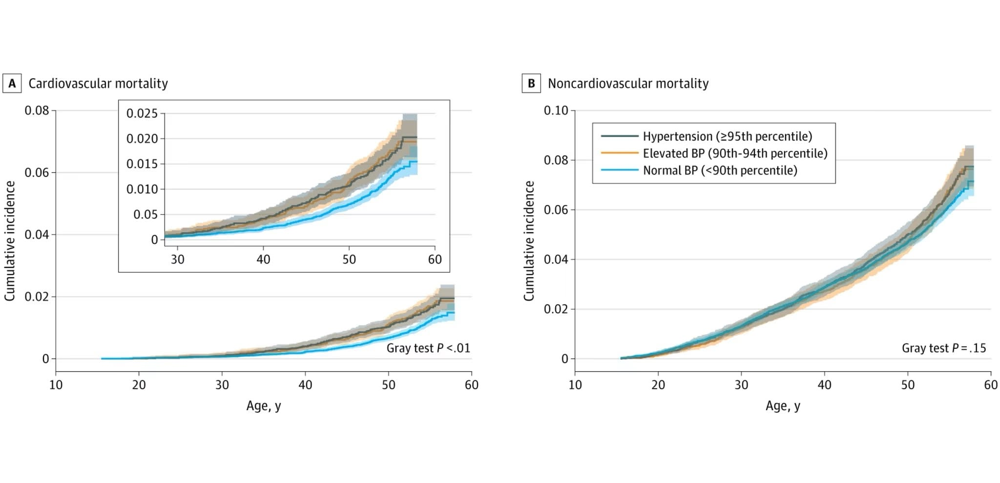

🚨 Promoting cardiovascular health can’t start in adulthood. Monitoring and addressing blood pressure as early as grade school could be critical for reducing CVD burden across the lifespan🚨
High blood pressure is one of the most important modifiable risk factors for cardiovascular disease (CVD). While we’ve long known that adult hypertension drives heart attack and stroke risk, growing evidence shows the story starts much earlier: in childhood.
📊 A new study following 37,000+ US children born between 1959–1966 into their mid-50s found:
- Children with higher blood pressure at age 7 had a significantly greater risk of premature CVD death.
- Both elevated systolic and diastolic BP were linked with increased mortality, even after adjusting for BMI, family, and socioeconomic factors.
- The association was especially strong in boys.
Paper · JAMAJAMA articlejamanetwork.com
Why it matters:
- Roughly 20% (1 in 5) children in this cohort met criteria for hypertension.
- Childhood BP tracked with lifetime cardiovascular risk: decades before most people are screened for heart disease.
💡 Takeaway: Promoting cardiovascular health can’t start in adulthood. Monitoring and addressing blood pressure as early as grade school could be critical for reducing CVD burden across the lifespan.
👉 This research underscores the importance of early prevention, family-level interventions, and public health strategies to protect the next generation’s heart health.
📍 When should blood pressure (BP) be measured in children?
According to the American Academy of Pediatrics (AAP, 2017 guidelines):
- Starting at age 3 years: BP should be measured at least once a year during routine health care visits.
- Before age 3 years: Measure BP only if the child has specific risk factors (e.g., prematurity, congenital heart disease, kidney disease, or medications that raise BP).
- At every health care encounter if the child is obese, taking BP-raising medications, or has kidney/heart disease, diabetes, or other concerning conditions.
📍 What is considered normal BP in childhood?
Unlike adults (where we use fixed cutoffs like 120/80 mmHg), children’s normal BP depends on:
The AAP uses percentile-based cutoffs:
- Normal: < 90th percentile
- Elevated BP: ≥ 90th to < 95th percentile, or 120/80 mmHg to < 95th percentile (whichever is lower)
- Hypertension: ≥ 95th percentile (confirmed on 3 separate visits)
- Stage 1: ≥ 95th percentile to < 95th percentile + 12 mmHg, or 130/80–139/89 mmHg (whichever is lower)
- Stage 2: ≥ 95th percentile + 12 mmHg, or ≥ 140/90 mmHg
✅ Simple rule of thumb (for quick recall):
- In younger children (<13 years): Use percentile charts (age, sex, height).
- In adolescents (≥13 years): Use adult cutoffs (normal <120/<80; elevated 120–129/<80; hypertension ≥130/80).
#CardiovascularHealth #Hypertension #PublicHealth #Epidemiology #Prevention

